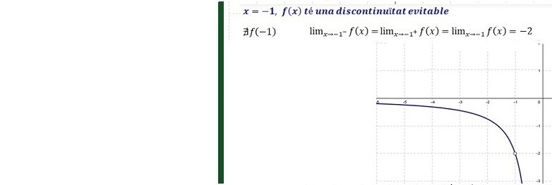
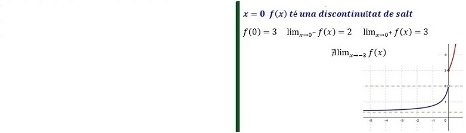
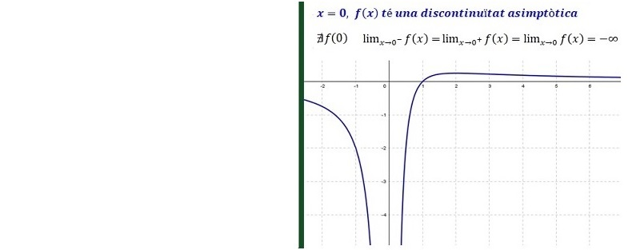
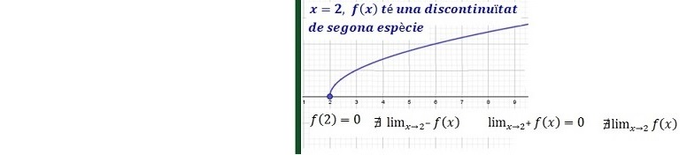

Límits i Continuïtat
1. Domini d'una funció y=f(x)
El domini són tots els valors pels quals la funció està definida.

💡 DOMINI: Dom (f) = Conjunt de valors de la variable independent (x) que es poden substituir sense que doni error.
RECORREGUT o IMATGE: Im (f) = Conjunt de totes les imatges del domini,el conjunt de possibles valors de y=f(x), es a dir, de la variable dependent.
Principals fonts d'error:
- Error 1: Divisió per zero (0 al denominador).
- Error 2: Valors negatius dins d'una arrel d'índex parell.
- Error 3: Valors negatius o 0 dins d'un logaritme.
- Error 4: Valors incompatibles amb el context de l'enunciat.
Càlcul analític del domini segons el tipus de funció:
-
Funció polinòmica: Sempre existeix imatge per a tot valor de la variable independent.
f(x) = p(x) Domini de f(x) =
-
Funció racional: Quocient de polinomis. S'exclouen del domini els valors que anul·len el denominador.
Domini de f(x) = \ { x | p(x) = 0 }
-
Funció irracional: Si l'índex de l'arrel és parell, el radicant ha de ser major o igual a zero. Si l'índex és imparell, no hi ha cap restricció.
Arrel parell: Domini de f(x) = ℝ \ { x | p(x) < 0 } = { x | p(x) ≥ 0 }
Arrel imparell: Domini de f(x) = ℝ
-
Funció Exponencial Sempre existeix imatge per a tot valor de la variable independent.
Domini de f(x) = ℝ
- Funció logarítmica: L'argument ha de ser major que zero.
Domini de f(x) = ℝ \ { x | p(x) ≤ 0 } = { x | p(x) > 0 }- Funció definida a trossos Cal veure quins valors poden donar "error" a cada una de les seves definicions.
f(x) =Domini de f(x) = ℝ \ { x | x no es pot substituir sense "error" o que no pertanyen a cap dels intervals que es poden substituir}f1 (x), si x ∈ (−∞,a) f2 (x), si x ∈ (a, b) f3 (x), si x ∈ (b, +∞) 2. Continuïtat d'una funció en un punt, f(x) és continua en x=a
- Gràficament: Una funció és contínua en x = a si: es pot dibuixar la seva gràfica passant pel punt (a,f(a)) sense aixecar el "llapis" del paper.
-
Analíticament: Diem que f(x) és continua en x = a si:
- ∃ f(a) es a dir a ∈ Domini de f(x)
- ∃ es a dir [límit per l’esquerra és igual al límit per la dreta]
3. Tipus de discontinuïtat de f(x) en x=a
-
Discontinuïtat evitable: Existeix el límit però no coincideix amb f(a) o f(a) no existeix.
però
-
Discontinuïtat de salt (finit): Els límits laterals existeixen però són diferents.
però
-
Discontinuïtat asimptòtica (o de salt infinit): Els límits laterals tendeixen a infinit.
= ±∞
- Discontinuïtat de segona espècie: Inexistència d'algun dels límits laterals.

💡 El límit existeix i és finit, però el valor de la funció no coincideix amb el límit o la funció no està definida en el punt. La discontinuïtat es pot eliminar redefinint f(a) amb el valor del límit.



4. Càlcul de límits d'una funció en un punt
-
En funcions definides a trossos, en els punts on canvia la definició , hem de calcular els límits laterals (per l’esquerra i per la dreta)
On no canvia la definició, hem de substituir x = a a la funció , es a dir calcular
- Si f(a) ∈ ℝ, limx→a f(x) = f(a)
- Si f(a) = 0⁄0 Indeterminació Hem de factoritzar el numerador i el denominador i simplificar el factor (x − a), a continuació tornar a substituir
- Si f(a) = ±∞ = k⁄0 (k ≠ 0) Si volem veure el signe de l'infinit, hem de calcular els límits laterals (per l'esquerra i per la dreta).
Si podem dir Hi ha lími de la funció en aquest punt
Si podem dir No hi ha lími de la funció en aquest puntAl substituir x = a a la funció, podem trobar els següents casos:
💡 En aquest cas podem dir que la recta x = a és una asímptota vertical.
5. Càlcul de límits d'una funció a l'infinit
1) Si és un polinomi:
Només ens interessa el terme de grau més gran, ja que per valors molt grans (positius o negatius) tindrà molt més pes que els altres termes. Els límits sempre donaran infinit ( o ), i en veurem el signe substituint.
El signe de l'infinit resultant depèn del signe del coeficient.
El signe de l'infinit resultant depèn del signe del coeficient i de si l'exponent és parell o imparell.
2) Si és una fracció algèbrica:
Surt la indeterminació . Simplifiquem els termes de grau més gran del numerador i del denominador i substituïm l'infinit.
-
Si l'exponent del denominador és més gran, el resultat sempre és 0. -
Si tenen el mateix grau simplifiquem i queda un nombre real. -
Si l'exponent del numerador és més gran sempre dona ±∞, veurem el signe substituint.
3) Potències:
Indeterminacions:- (quan els dos termes tenen el mateix grau)
- (tipus e)
- Funció logarítmica: L'argument ha de ser major que zero.